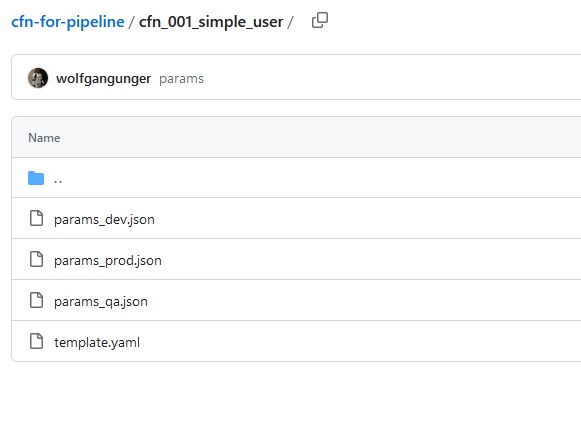
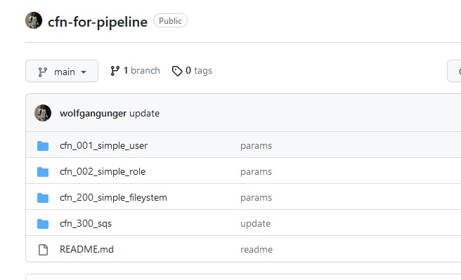
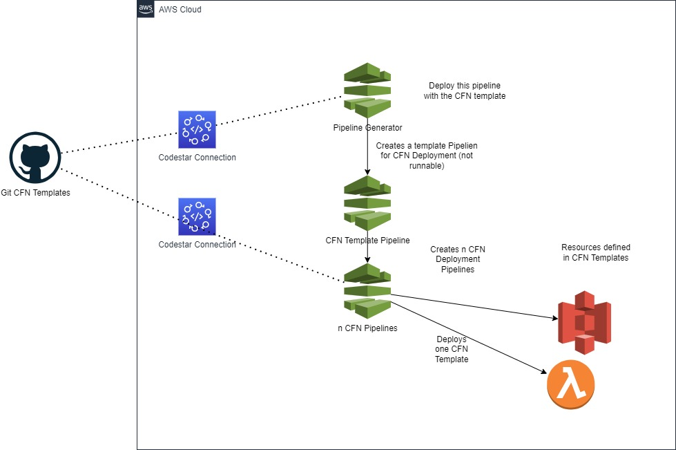
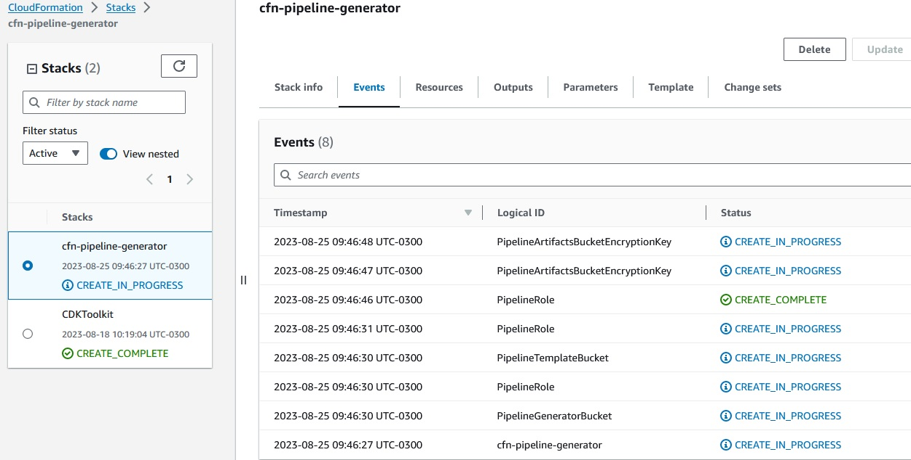
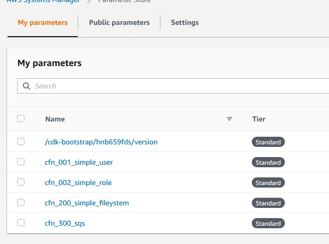
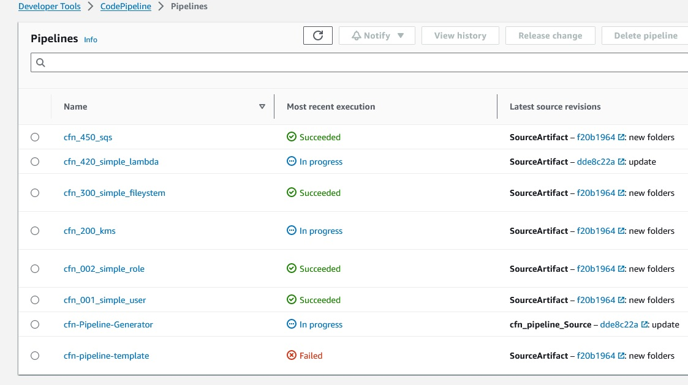
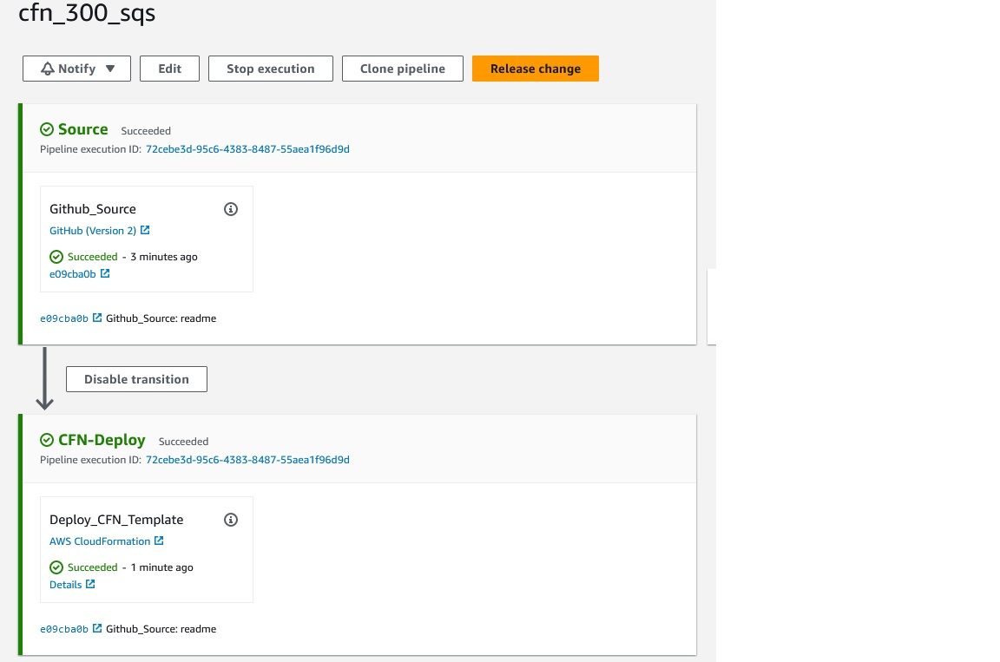

SCC
Brasil
os cloud gurus
Software Cloud Consulting
Your software development, cloud, consulting & shoring company
Pipeline for automatic CloudFormation Deployments

By Wolfgang Unger
Introduction
Are you using CloudFormation as Infrastructure as Code Tool but you still deploy your Templates manually on the Web Console?
Do you need an automation to deploy your CloudFormation Templates to your AWS Account(s) ?
A Pipeline or a tool that will automatically create a CloudFormation Deployment Pipeline for each of your stacks ?
You need to deploy the same Template on different environments or accounts with different parameters for each template?
Creating 50 Pipelines for each stage ( lets say Dev, QA and Prod would be 150) would a lot of work. Either in Azure Devops, AWS CodePipeline, Bitbucket or Jenkins.
Then you should read this blog and use this Pipeline which will do exactly this for you.
CloudFormation is perfect to deploy your Infrastructure on AWS as IaC.
Normally you store your Templates in a git repo and this way you have the history available and other GIT features like Code Reviews and Pull Requests.
But how do you actually deploy these CloudFormation Templates?
Very common is to do this on the AWS Webconsole.
This works quite well but brings some risks.
You are able to deploy any Stack you want if you got the rights and also you can deploy local changes without first commiting to your git repo.
This can end up in a situation where your deployed stacks don't fit together with the stacks in your git repo.
Therefore it is good to have a pipeline to deploy these templates instead of do it manually .
You will verify only Stacks in a certain git branch will be committed and the deployed stacks are always in sync with your repo.
Also you can then limit the user roles and no longer allow manual deployments, at least not at QA or PROD.
But how do set up such a pipeline ?
If you have for example 40 CloudFormation templates you will need 40 Pipelines, if you have 3 stages ( Dev, QA and Prod ), you will need 3 x 40 Pipelines.
You don't want to create them manually .
I have created a CodePipeline that will create these CFN Pipelines for you.
You just have to deploy it with a CloudFormation Template.
I will scan your CloudFormation repo and for each folder ( following a naming convention ) it will create a Pipeline to deploy this stack.
Please have a look into these 2 Github repos from me to get a better understanding .
The repo for the Pipeline Generator :
Git Wolfgang Unger Pipeline Generator
An example repo how your CloufFormation Repo should look like:
Git Wolfgang Unger CFN Example Repo
There is a Readme in each repo to guide you, but I will explain some additional infos in this blog on how the pipeline works.
CloudFormation Repo
Let's start from the beginning, we have a repo with our CloudFormation Templates, which represents my "Wolfgang Unger CFN Example Repo" from the 2 repos above
Each CloudFormation Stack will be deployed for example in 3 accounts (dev, qa and prod) with different variables.
So we have besides our template yaml 3 json files for the variables and a structure somehow like this:

Further we got multiple of templates so let's group each template and its variables jsons in a subfolder in your repo, which will be look somehow like this:

This repo will get updated, we will update existing templates, we will add a new folder with a new template and we will maybe delete an existing folder with its template.
The Pipeline must be able to handle these use-cases, so our Pipeline-Generator-Pipeline must:
- Create a CloudFormation Deployment Pipeline for each Folder in the repo. Initial for all folders and later on if a folder was added.
- Delete an existing CloudFormation Deployment Pipeline if a folder was deleted .
The CloudFormation Deployment Pipeline must be able to create or update a CloudFormation Stack.
(Unfortunatelly this Pipeline cannot delete an deployed Stack, because it got only one Template in its Deployment Section and one stack there is mandatory. So if you decide to delete a stack and a folder, you have to delete the stack on the Console.
This is also to protect accidental Stack deletion, see more Infos below.
To use my Pipeline you have to follow the naming conventions of my example on the template and parameter files. If you want to change this or the prefix you have to adapt the code.
Take also a look into this blog if you have doubts about how to organize your CloudFormation Templates :
Git How to organize your CloudFormation Templates
You have to add the python script 'create_pipelines.py' in a folder 'scripts' in your CloudFormation Repo to enable
the Pipeline Generator to create the Pipelines based on your Repo. Please have a look on in my Example CFN Repo.
Setup Generator Pipeline
Since we now got the source repo for our CloudFormation templates, we can have a look on the Pipeline which will create the CloudFormation Deployment Pipelines.
This is the architecture:

The readme explains quite well the neccessary steps, but I will mention the most important ones, but before this a note on deployments on different accounts and the Pipeline architecture:
The CloudFormatin Template will create a Pipeline generator pipeline which will create one Pipeline for each Cloudformation template in the cfn-repo. For this architecture 2 approaches are possible:
To create this generator pipeline once in a toolchain account and create all cfn-pipelines for all accounts/stages in there to deploy to 3 different accounts
Possible, but this would require cross account roles and setup and complicate this project, make it harder to understand.
My multi branch pipeline follows this approach
See this example using this approach: Git Multi Branch Pipeline
I implemented the 2nd more easy and clear approach for this pipeline.
In each account/stage the pipeline generator must be deployed to generate the cfn-templates in the account where the stacks should be deployed.
Thus no cross account roles are complicating the project, the stage account is considered the same as the toolchain account
note, that you have to deploy the generator pipeline in dev, qa and prod for example
Codestar Connection
The Pipeline is a AWS CodePipline and will need your CloudFormation Repo as InputCodePipeline supports various repos, so CodeCommit, Github or Bitbucket is all possible.
If you use a non-aws-native Repo you will have to setup a CodeStar Connection to allow CodePipeline to read your - lets say - Github repo, as in my example.
In Github you have to install the AWS Connector for Github Application and add your repos in the configuration.
Then you create the CodeStar Connection and define these repos there .
You will need the Code Star Connection ARN in the cdk.json.
Install the Pipeline Generator
Once you have setup the Codestar Connection to your repo you can install the Pipeline Generator with the CloudFormation Template. The Template is named 'cfn-pipeline-generator.yaml'.You have to define in the variables the codestar connection your repo name and you can choose if the Pipeline Generator should be triggered on Changes in your CloudFormation Repo.

Pipeline Generator
The Pipeline will start to run and deploy a Template Pipeline for the CloudFormation Deployments.This Template Pipeline itself is not runnable ( the stack name/folder is not yet defined ).
Once this is done it will checkout the CloudFormation Repo and check the folders and create the CFN-Pipelines.
Please check the Python Script Infrastructure/scripts/create_pipelines.py if you want to see the details.
The folder must have a defined prefix (cfn_) to be recordnized as a Template Folder.
It will then create an entry in the Parameter Store to store the folder and pipeline name.

Once a Pipeline was created and there is a entry in ParameterStore the creation will be skipped.
If there is not an entry it will create the entry and then the Pipeline based on the earlier created Pipeline Template.
It will now replace the variables for the parameter json and the pipeline name based on the git input.
Once this is done you should see something like this in CodePipeline:

As you can see, there is the :
Pipeline Generator Pipeline
The Template Pipeline (failed)
and for each Folder in my CFN-Repo a CloudFormation Deployment Pipeline, in my example 4 Pipelines.
These Pipelines are simple and have just a Source and a Deployment Step:
Pipeline for CloudFormation Deployments
The Pipeline for CloudFormation Deployments are looking like this :
The Pipeline is setup with 'trigger_on_push=False' , so it will not start automatically once you have updated the CFN Repo.
I implemented this, because you probably don't want this behaviour for QA and Prod.
It is better to start the Pipeline and therefor the Deployment manually once you are sure to do so.
If you want to run the pipeline on code changes, you must change this Parameter, but I would recommend you add at least a Manual Approval Step to the Pipeline. Otherwise you Prod ennvironment might get corrupted because of an error in your Template.
Best is to deploy it first on Dev, Test it and afterwards on QA and Prod.
Select the Pipeline and press 'Release Changes'.
Once a Pipeline was created you can re-run it any time you want to update a stack.
If you delete a folder and its template in your git-repo and run the Pipeline Generator Pipeline again, it will delete this Pipeline.
There is an importing point on Deleting Stacks and its folder in your CFN-Repo:
The Pipeline cannot delete the Stack since it must contain at least one Stack. And there is only one Stack .
So you must delete the stack manually on the Console before running the Pipeline Generator Pipeline to cleanup the Pipeline.
I would be possible to delete the stack with boto in the python script running at the last action in the Pipeline Generator Action, that's the place where it could be done, but there is no chance to include an approval in here, so this is kind of risky.
If you rename a folder in your cfn-repo the CFN Template would be deleted automatic
Deleting CFN Stacks -especially on Prod- should always be confirmed manually, therefore I did not implement this. You - or some DevOps with permission to delete Stacks - have to delete the CFN Stack manually if you want to do so.
Additional Infos
I hope you get the architecture behind this automated Pipeline and you can set up successfully.Please enjoy the CloudFormation Deployment Pipelines and give feedback if you got.
You can adapt the code if you need a different behaviour, for example, if you want the CFN Pipelines to be triggered on push, or you want to change the Prefix for the Folders etc.
Have also a look into the other Blogs on DevOps and Pipelienes.
References
See also this video about the Generator on my youtube channel
Github Repos:
Autor

Wolfgang Unger
AWS Architect & Developer
6 x AWS Certified
1 x Azure Certified
A Cloud Guru Instructor
Certified Oracle JEE Architect
Certified Scrum Master
Certified Java Programmer
Passionate surfer & guitar player